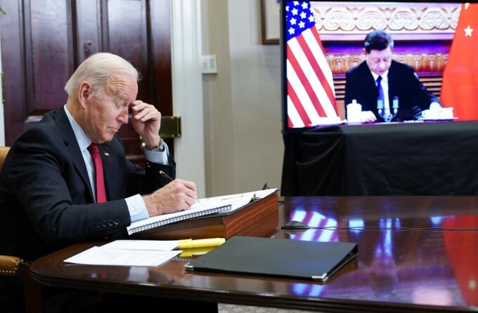

Nhà Trắng nói ông Biden không xem ông Tập là "bạn cũ", sau khi được Chủ tịch Trung Quốc gọi là "lão bằng hữu của tôi" trong họp thượng đỉnh. "Tổng thống nói ông có mối quan hệ lâu dài với Chủ tịch Tập. Họ từng gặp nhau nhiều lần, có thể thảo luận thẳng thắn để làm việc hiệu quả, nhưng Tổng thống không xem Chủ tịch Tập là bạn cũ", phó thư ký báo chí Nhà Trắng Andrew Bates hôm nay nói với phóng viên trên Không lực Một, khi Tổng thống Joe Biden đang trên đường đến bang New Hampshire.

Biden, 78 tuổi, thường nói về mối quan hệ lâu dài của ông với lãnh đạo Trung Quốc, đặc biệt khoảng thời gian ông là phó tổng thống Mỹ còn ông Tập là phó chủ tịch Trung Quốc. Tuy nhiên, Biden từng nói rõ ông không xem ông Tập, 68 tuổi, là "bạn cũ". "Thẳng thắn mà nói, chúng tôi hiểu rõ nhau nhưng chúng tôi không phải những người bạn cũ. Đó đơn thuần chỉ là công việc", Tổng thống Mỹ nói tại cuộc họp báo ở Geneva, Thụy Sĩ hồi tháng 6.
Trên chuyên cơ Không lực Một tới New Hampshire, Biden cho biết đã đạt được tiến bộ với Trung Quốc trong vấn đề Đài Loan. Tuy nhiên, Tổng thống Mỹ sau đó nói Washington không khuyến khích Đài Loan độc lập. "Chúng tôi sẽ không thay đổi chính sách. Chúng tôi không khuyến khích độc lập, mà khuyến khích họ làm chính xác những gì đã nêu trong Đạo luật Quan hệ với Đài Loan. Đó là điều chúng tôi đang làm", Biden cho hay.